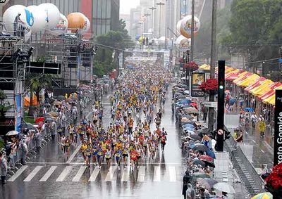

vamo, vamo, vamo…
Posts tagged desafio
Voltando novamente
38 years
by Alecão
in Ex-sedentário
Desde a última corrida de 6Km, tenho estado estático. Com apenas um treino que foi feito fora de casa com o apoio do Claudião.
Acho que estas recaídas são comuns no começo e tem a ver com o fato de tentar vencer a batalha contra a ansiedade. Mas podem contar comigo novamente falando de meus treinos.
Não √© a primeira vez que tenho uma reca√≠da. Em 9 de outubro isso tamb√©m aconteceu e recorri ao que já esta virando um mantra pra mim: “Se voc√™ perder um treino ou fraquejar, não √© o fim do mundo. Não desista.” proferido por Karnazes.
Apenas hoje consegui ler, comentar e arrumar tempo para escrever sobre minha caminhada de segunda feira. Depois do trabalho, o Edgar que trabalha comigo, me deu carona até São Caetano e de lá eu deveria pegar um ônibus para minha casa. Pensei, por que não ir a pé? E fui como mostrado neste link do MapMyRun: Mapa do trajeto.
Foram 4,5 Km de caminhada com roupa e sapato social. Mas serviu para dar um start na pausa. E que venham os treinos novamente.
Este treino é como uma resposta antecipada ao desafio proposto pelo Claudião. Saiba que adorei o desafio, acertou em cheio naquilo que estou precisando. Um empurrãozinho. Mas vou encarar o desafio como um treino de trote de pelo menos 20 minutos a se realizar ainda esta semana.
Desafiando o meu melhor amigo. Responsável por tudo isto!
28 years
by Claudião
in Ex-sedentário
Eu devo minnha saúde. Minha felicidade atual. Ter conhecido o Thiago e ter feitos amigos corredores blogueiros especiais a este blog. Idealizado pelo Alecão.
Eu vacilei quando ele falou em blog. Cheguei a temer um fracasso em plena rede mundial de computadores.
Mas o Alekão me instigou. Cutucou e me fez gostar disso tudo. Eu devo tudo isso a você, meu amigo, que por capricho da natureza é também meu primo duas vezes.
Da última vez que eu o vi, perguntei no que poderia ajudar. Você pensou e não deu uma reposta. Por não tê-la, obviamente.
Eu vi você correndo no dia 06.03. Você pode treinar. Só precisa reencontrar aquele Alekão que treinou setembro e outubro, com regularidade. Precisa reencontrar aquele Alekão que no dia 22.11.09 proporcionou a nossa melhor história juntos, repito, a melhor dentre as milhares que temos para contar para os filhos do Maurício e do Henrique.
Eu amo você e Deus sabe que eu quero é só ajudar.
Desafio você a relatar aqui uma caminhada de 20 minutos. Seu prazo é até Sexta-Feira, no meio desta semana corrida, como a do Thiago e a minha.
Caso seu prazo vença sem que haja nenhum treino, na próxima semana aparecerei de surpresa, em qualquer dia, para arrástá-lo para um treino. A Andréia me garante um chuveiro e um cafézinho.
Que moleza. Onde está o desafio? O desafio está no fato de que o Alekão fará tudo para não me ver levantando as três da manhã para atravessar a cidade. Mas se for preciso eu irei e o farei COM GOSTO!
Meia maratona internacional de SP
38 years
 Galera fiz a minha inscrição pra meia maratona, na hora do almoço vou pagar o boleto, alguém me acompanha? Vai ter 10k também.
Galera fiz a minha inscrição pra meia maratona, na hora do almoço vou pagar o boleto, alguém me acompanha? Vai ter 10k também.
http://www.yescom.com.br/meiasp/2010/portugues/index.asp

Consiga um parceiro para treinar junto
58 years
by Claudião
Ontem era um daqueles dias em que a cabe√ßa quer treinar, mas o corpo reclama por ter ficado 6 dias sem correr s√≥ comendo doces. Eu iria treinar de qualquer forma, mas daquele jeito…
Eis que descendo a rua de casa, meu vizinho, o Japa (Fábio Hashimoto) estava na calçada e me disse que seu fosse trotar que ele iria junto.
Mas é claro!
O treino que tinha tudo para ser um fiasco foi muito bom. Sete quilômetros e meio sem repetir o percurso e o Japa, que não fez inscrição em nenhuma corrida porque se dizia despreparado, subia as ladeiras se segurando para não me deixar pra traz.
Combinamos de treinar uma vez por semana juntos. Vamos ver. Treinar com o Japa tem um diferencial ímpar. Como é skatista desde que as rodas de tal equipamento eram quadradas, tem uma flexibilidade nota mil e me obriga a alongar corretamente, e muito. Um verdadeiro personal nesse quesito. Apesar de morarmos na mesma rua, só depois de três meses ensaiando, que a gente conseguiu fazer o tão prometido treino juntos. O Japa é daqueles que não precisa fazer treino específico para poder participar de provas como as que participamos. Além de skatista também usa a bike como meio de transporte até o trabalho. Regularmente ele faz uns treinos ninjas em parques, do tipo exército, musculação livre, sei lá, todos criados por ele mesmo, mas alguns deles até se parecem com os que tenho lido na contrarelógio. Ele disse que não ficará de fora de nenhuma prova de revezamento que porventura participemos.
Estou renovado e finalmente imprimi quatro vias da inscri√ß√£o dos 25km da Maratona. Colei no guarda-roupa, na porta da geladeira e no espelho do banheiro. Outra eu trouxe para cá e colei na capa da agenda. Isso tem de surtir efeito. Rs…
Em tempo: Em 2004 o Japa e eu, corremos numa equipe de 8, na 12ª Maratona Pão de Açúcar. A equipe era formada por grande e especiais amigos. Foi perfeita, mesmo eu tendo participado já depois de engordado e sem treinar, quase morri para correr os 5km iniciais.

A minha amada também participou dando apoio e principalmente se divertindo junto.
Aos amigos queridos da foto: Rodolfo, Carol, Ricardo, Giba, Fábio, além do Kleber, Dri, Paty, Fabricio. Fica o convite para formamos novamente um grande e festiva equipe de revezamento. AMO VOCÊS.
Já tenho compromisso para o aniversário de São Paulo
38 years
by Alecão
in Ex-sedentário
Acabei de me inscrever para a XIII Troféu Cidade de São Paulo Carrefour Viver 10k. Mas me inscrevi para os 6Km, e que me sigam quem também for.
O desafio!
58 years
 Ano passado, mas não tão distante anuncie aqui no blog que teria um desafio, ele já tem data marcada dia 02/05 nesse dia acontece a Maratona de São Paulo e junto com ela uma corrida de 25Km uma de 10Km e caminha de 3Km, então tem para todo gosto.
Ano passado, mas não tão distante anuncie aqui no blog que teria um desafio, ele já tem data marcada dia 02/05 nesse dia acontece a Maratona de São Paulo e junto com ela uma corrida de 25Km uma de 10Km e caminha de 3Km, então tem para todo gosto.
 Ainda preciso falar do desafio?
Quero encarar os 42km mas se sentir difculdade nos treinos vou pros 25Km já montei uma planilha das competições que quero correr até lá e ainda tem os treinos que já esta tudo na cabeça e outro dia posto aqui.

 Então ai vai Claudio, Alex e leitores do blog qual desafio vocês querem?
42Km?
25Km? — Claudião devidamente inscrito, com 4 meses de anteced√™ncia —
10Km?
3Km?
 
O desafio esta ai e não tem desculpas, pois temos exatamente cinco meses até esse dia.
A todo vapor
68 years
Fala galera, hoje estou muito feliz, mas depois eu conto, os treinos estão muito bons, ter√ßa rodei 6km bem tranq√ºilo já hoje foi mais puxado mas conseguindo treinar apenas 8km por causa do tempo curto mas em ritmo forte, esta bom estou feliz assim agora vem a grande noticia, tem uma vizinha colega de anos tamb√©m corredora, ela trabalha na rede globo e sempre consegue algumas inscri√ß√µes pra São Silvestre e não √© que ela conseguiu uma pra mim üòÄ poxa estou muito feliz, recebi o e-mail hoje e vim correndo contar, então √© isso pessoal dia 31/12 estarei lá no meio de todo aquele povo fazendo muita festa, um grande abra√ßo a todos.

Corrida de Natal? Topo, Topo, por que não?
08 years
by Alecão
in Ex-sedentário

http://www.mundoredondo.com.br
O Claudio me convidou para a Corrida de Natal da Corpore. E eu topo! Topo! Por que não?
.
.
.
Assim terminamos o anos com mais uma corrida. Mais um desafio.
.
.
.
Hoje de manhã, treinei 50 minutos (T019, o T018 não foi registrado no blog), encontrei minha mãe no trajeto. O caminhar dela é na mesma velocidade do meu trote. Sempre me impressionei com a velocidade do caminhar da minha mãe!
.
.
.
E ai turma, vamos nos inscrever? vamos lá!
Não estou legal
28 years
by Alecão
in Ex-sedentário
 Pretendo ser breve aqui. 2 semanas sem treinos e as razões não só são as mesmas como pioraram.
Pretendo ser breve aqui. 2 semanas sem treinos e as razões não só são as mesmas como pioraram.
Tanto o Claudio como o Thiago conseguiram mais quando criaram compromissos públicos.
Me proponho um desafio de treinar amanhã cedo, faça chuva ou faça sol, e como diria o Claudio, um presente para mim.
Treino de hoje “eu e a Nazar√©”
48 years
Hoje o treino foi dureza tudo por culpa da Nazar√©, ela já esteve no meu caminho por tr√™s vezes, foram tr√™s competi√ß√µes duas dos bombeiros e uma do dia da independ√™ncia, são provas de 10km que fiz a algum tempo, a Av. Nazar√© tem uma grande subida parece que nunca mais vai acabar e nessas competi√ß√µes a subida fica entre o 7¬∫ e 9¬∫ quilometro quase no fim do percurso, hoje meu treino foi praticamente nela, tr√™s voltas de 3km cada uma totalizando em 9km com tempo de 45min06seg, passar tr√™s vezes seguidas na Nazar√© não foi fácil, não mesmo, mas foi muito bom consegui fazer o que tinha planejado üòÄ
No final de semana também treinei, foi no domingo corri e caminhei uma media de 9km a Paula foi comigo, não resisti e deixei ela de lado por um momento para correr um pouco mais, ela fez uns 7km.
Já que o Claudio falou em desafio vou falar sobre o meu, logo entro de férias da faculdade vou ter mais tempo para me dedicar aos treinos, sempre tive vontade de vir trabalhar correndo são 21km uma meia-maratona de distancia, já até montei o percurso espero conseguir mas como ainda esta longe tenho tempo para treinar.

Foto: Percurso de hoje, no grafico da para perceber onde fica a Nazaré entre o Km 1 e 2.
.jpg "DSC01815 (1024x576)")
.jpg "DSC01906 (1024x576)")
.jpg "DSC01932 (1024x576)")


{kind=link}
{kind=link}
{kind=link}
√öltimos comentários